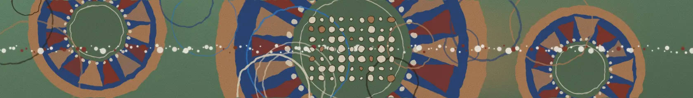

Analysis

What the data reveals about Brazil
The information in this article comes from a systematic mapping of every possible cross-reference and question across more than 200 public datasets, split into 43 themes, prioritising what had never been asked before. Each of the more than 2,000 hypotheses was born from applying patterns found in earlier research, and the answers were statistically validated to arrive at the 83 new findings gathered here — none of them published in an official report. (The linked working files are in Portuguese; an English summary of the strongest findings is here.)
Land, forest and rural credit
The Cerrado has lost 2.3 times more vegetation than the Amazon since 2002 — 326,731 km² against 139,868 km². Adding the Cerrado and the Caatinga together, the total reaches 3.3 times the Amazon rainforest. Public attention is aimed at the wrong biome.
Enforcement also treats the biomes differently: the same environmental offence, committed in the Amazon, draws a fine of R$ 115,000; in the Cerrado, R$ 24,000. For paperwork violations the gap reaches 45 times. The yardstick of punishment shifts with geography, not just with the damage.
After Pará, the five states with the most accumulated deforestation are Bahia, Mato Grosso, Tocantins, Maranhão and Goiás — the heart of the Cerrado and of MATOPIBA, not the classic Amazon. And the frontier advancing fastest right now is not even that one: comparing recent alerts with the accumulated history, the leaders are Roraima and Amapá, not the Pará of the 2000s.
There are 27 municipalities that have accumulated more than 10 km² of satellite-alerted area since 2015 and have never received a single infraction notice. Ourilândia do Norte, in Pará, alone accounts for 30% of the clearing of its most heavily inspected neighbour — and 3% of the notices.
Rural credit and deforestation go hand in hand, but only for old clearing: the more credit per hectare a municipality receives, the larger the share of its area already deforested — a pattern that holds equally inside and outside the Amazon. Against recent deforestation, however, the relationship all but disappears: the money finances the already consolidated frontier, not the one advancing now. Cattle herd per hectare tells the same story, even more strongly.
The rural land registry (CAR) also tracks accumulated clearing, but more weakly — it chases the frontier after it has already moved, rather than anticipating it.
Not all rural credit is concentrated: looking at who takes the money (not how much), the distribution is fragmented — the largest borrower in a typical municipality takes only 2.7% of the total. It concentrates only where properties are large; where credit per hectare is intense, it is dispersed. It is the same pattern folded over: large properties produce less per hectare and use credit to expand; smaller properties use credit to intensify.
The Rural Land Tax (ITR) follows the same yardstick: municipalities with larger rural properties pay up to 49 times more ITR per capita than smallholder municipalities — and the relationship gets stronger, not weaker, after accounting for municipality size.
Mining has its own social geography: municipalities that extract basalt have a GDP per capita of R$ 46,000 and 6% Bolsa Família coverage; quartzite municipalities, R$ 13,400 and 32%. It is not the mining royalties collected that predict this — it is the substance. And in half of all mining municipalities a single company accounts for more than 82% of the sector's entire royalty revenue.
A price shock in mineral commodities (between 2017-21 and 2022-25) moved neither the formal labour market nor the tax arrears of mining municipalities — mining genuinely employs few people and is not a detectable fiscal shock, even in the municipalities most dependent on it.
The flow of rivers monitored by the National Water Agency is, at the median, 10% below its historical average, and 38% of the stations have lost more than a fifth of their flow — but the monitoring network does not cover the agricultural frontier, so cross-referencing this with wildfires gives an incomplete picture.
The digital blackout
The strongest finding in the whole database: the more rural and agricultural a municipality is, the worse its 4G/5G internet coverage — a relationship that stays strong even when comparing towns of the same size and the same income. Brazil's connectivity blackout is a problem of the countryside, not of small towns.
Within the same municipality, rural schools are without internet 15 times more often than urban schools (30.5% against 2.0%). The gap lies almost entirely between municipalities — within the same town, rural and urban schools nearly tie.
This has a real cost: schools without internet score worse on IDEB, the national basic-education index, in the early years, even after accounting for municipal income.
Official sanitation figures are also a victim of the blackout — just not in the way one would imagine. Town halls fill in forms saying they serve, at the median, only 62% of what an independent IBGE dataset calculates they should be serving. And what predicts this self-reporting gap is not municipal income: it is mobile coverage. Where there is signal, the local official fills in the system properly; where there is none, the "sanitation deficit" is in large part a deficit of whoever fills in the form.
The people who complain on Consumidor.gov, the federal consumer-complaints platform, are not those who suffer the most harm either — they are those with more digital infrastructure. Complaints rise with Pix adoption and fall with poverty: using this database as a thermometer of consumer abuse inverts the sign.
The same bias appears in health: comparing dengue in the same year and in the same system, case notification responds 4.4 times more strongly to mobile coverage than hospital admission does. Notifying requires filling in a form; admitting requires a bed actually occupied. Anyone using notifications as a measure of how many Brazilians fell ill is, to a large extent, measuring who has the infrastructure to report.
Public money and the rule that doesn't bite
The panel's biggest finding on public management: a funding-agreement proposal backed by a parliamentary earmark becomes a signed agreement in 86.5% of cases; without an earmark, 15.6%. The earmark does not help — it is the approval mechanism. Without a political sponsor, the federal transfer-agreement system is a queue almost nobody gets through. And earmarked agreements also execute more of the transfer (52.2% against 31.8%), despite asking for smaller amounts.
The fiscal filter that should block indebted municipalities blocks, in practice, nothing: a municipality's standing in the federal compliance registry (CAUC) predicts absolutely nothing about its chances of obtaining an agreement. It is the earmark that selects, not fiscal compliance.
This pattern — a formal rule that should filter and does not — repeats seven times in this panel: debtors to the Federal Revenue win public tenders just like any other company (25,643 companies with R$ 241.7 billion in tax debt won contracts, and 12,000 of them still hold a government corporate card); a municipality's official fiscal-quality rating does not predict whether it will fall into debt; a municipality's transparency score does not predict fewer sanctioned companies operating there — it predicts more; sponsors of cultural projects under the Rouanet Law are sanctioned or in debt to the federal government at a rate far above the average for active companies in the country; and the serious irregularities found by the federal audit-by-lottery programme are almost uniform between rich and poor municipalities — what varies is the chance of being drawn, not the conduct.
One in six outsourcing companies that supply workers to the federal government is on the Comptroller General's own list of companies sanctioned for corruption or fraud. And almost 60% of the partners of sanctioned companies appear as partners in another 17,500 companies — the punishment falls on the company's tax ID, not on whoever runs it.
The margin pocketed by the middleman in federal outsourcing is regressive: in a university-level post, the worker keeps 53% of what the government pays for them; in the lowest-level post (basic literacy), only 30%. In the median post, the government pays 2.5 times the salary the worker receives.
More than half of federal tenders (55%) have a single bidder. In financial services the rate reaches 97%; in associations, 91%; in health, 76%. Where the service is specialised, price competition practically does not exist.
By cross-referencing the full text of municipal official gazettes, it was possible to extract 449,693 company tax IDs cited — including 2,755 sanctioned companies, present in 92% of the municipalities analysed. And looking directly at who received payment (not just who was cited), municipalities paid R$ 18.4 billion to sanctioned companies — the two measures (being cited and being paid) are practically independent of each other.
Supplier concentration also shows up at the municipal end: the largest creditor of a typical municipality takes 38.5% of the total amount paid, and in 234 municipalities it exceeds half. Neither poverty nor business density explains this concentration — it simply exists. And almost half (49%) of what town halls pay goes to suppliers based in the municipality itself — but that share rises sharply with town size: public procurement leaks out to the regional hub.
Debtors to the federal government are also frequent creditors of town halls: 12.2% of municipal suppliers owe money to the Federal Revenue, but they take 22.7% of everything paid — they are the large suppliers, not an exception.
The Rouanet Law approval funnel is the opposite of what one would expect: the Southeast approves 26 times more cultural projects than the North, but raises much less of the approved amount (median of 47% against 100% in the North) — a high volume of approvals, not a sponsorship network, is what overloads fundraising.
The largest supplier on the National Public Procurement Portal covers 84% of Brazilian municipalities, with a median of 228 contracts per town — but the total value recorded (R$ 47.7 trillion when summed) should not be used as is: there are contracts of more than R$ 1 billion that are typos, and the system's parliamentary-earmark field is 99.4% empty.
Even the price of medicines bought by the public sector varies without explanation: the same drug, in the same unit of supply, in the same year, costs up to 2.4 times more for one buyer than for another — and in one specific case (an injectable sedative), almost 6 times.
A company that donated to a campaign in 2014 is more likely to be a government supplier today — but the effect is small: from those that donated least to those that donated most, the chance of becoming a supplier rises from 10.7% to just 12.1%.
Unequal Brazil seen from above
Residential solar panels are a class marker that survives controlling for income: even comparing municipalities with similar income, more solar generation per household means less Bolsa Família coverage.
The number of religious temples per household goes the opposite way: the higher the Bolsa Família coverage, the more temples per household — and the relationship doubles in strength when measured by the building actually erected, rather than by the church's registered tax ID.
Brazil's construction site is poor self-building, not property development: poorer municipalities have almost 3 times more dwellings under construction per inhabitant than the richest (R$ 40,600 against R$ 14,600 in the comparison by income quintile, inverted). And fewer than half of these works are formally registered — informality is highest precisely where the most building happens.
Desenrola, the debt-renegotiation programme, reached the Federal District 9.4 times more (945 per thousand Bolsa Família families) than Maranhão (100 per thousand) — the debt of those with the least money to negotiate simply was not resolved in the same proportion. The average Pix ticket per individual is a good thermometer of poverty: it falls sharply where Bolsa Família coverage is higher.
BNDES development credit that arrives automatically, without going through an accredited bank, covers 4,772 municipalities; credit that depends on a local financial agent, only 379 — 12.6 times fewer. Without a bank nearby, federal development funding simply does not reach 93% of the country.
Pix has become the most sensitive territorial thermometer in the panel: 70% of Brazilian municipalities are net debtors on the network (they receive less than they pay), and adoption of the payment method follows connectivity infrastructure, not available income.
The official socioeconomic indicator used by schools to "control" for income has a correlation of -0.90 with Bolsa Família coverage — in practice, it is a poverty index in disguise. Using it alongside income as a statistical control is redundancy, not two independent factors.
Federal civil servants' pay barely changes from state to state — but relative to the median income of the surrounding population, it is 7.74 times higher in Paraíba and only 2.73 times higher in Amapá. Federal civil servants do not earn more in the Northeast: it is their surroundings that earn much less.
Petrol is most expensive precisely in the poorest municipalities — and it is not a lack of competition: Parintins (AM) charges R$ 8.39 a litre against R$ 5.76 in Goiatuba (GO), a 45% difference, with no relation to the number of filling stations available.
Almost half of the municipalities that had a bank branch in 2014 had lost it by 2022 (1,813 of 3,674, or 49%) — and the departure of physical banks does not choose by municipal income. The number of towns hosting the headquarters of a financial institution fell from 690 to 464 between 2009 and 2025, even as the total number of institutions in the country grew. Credit unions, incidentally, do not fill the gap left by the banks: they sit in already prosperous mid-sized towns (median population of 51,500), not in the abandoned small municipality.
Having private health insurance and being poor are almost opposite events (correlation of -0.73) — where there is income, there is private insurance; where there is not, the public health system's Family Health Strategy grows in its place.
Pé-de-Meia, the school-retention programme, has the best targeting measured in this entire panel: its coverage closely follows poverty (Bolsa Família) and it is the geographic opposite of Desenrola, which concentrated in the rich states.
Of the subsidised cooking gas, only 26% of Bolsa Família beneficiaries receive Gás do Povo — and the proportion varies fourfold between municipalities. Residential solar generation already totals 4.26 million installations by individuals, against 363,000 by companies — but the capacity installed by companies is still almost half of the total. Only 8.4% of Brazilian municipalities host a financial institution's headquarters.
Adult obesity follows income (the richer, the more obesity), while child undernutrition follows poverty (via Bolsa Família) — the two faces of the nutrition transition coexist in the same country, in the same year, in opposite geographies.
The pay gap between men and women looks, at first sight, like a rich-town phenomenon — but the effect almost disappears when comparing only towns of similar income, and racial composition explains even less than income. In 39% of Brazilian municipalities, moreover, women earn more than men at the median. The "gender gap" that shows up in national rankings is, to a large extent, an artefact of comparing poor towns with rich ones.
Where the federal social-assistance transfer is larger, the town hall spends neither proportionally more nor less of its own budget on social assistance — federal money neither compensates for a lack of local investment nor adds to it.
Health: what the data really measures
Notifications of violence against adolescents do not measure violence — they measure the existence of a service that notifies. They bear no relation to the youth homicide rate in the same municipality, but they are strongly related to income: more is notified where schools are better and the internet works.
The same holds for dengue: the higher a municipality's GDP per capita, the more notifications recorded — and the higher the poverty, the fewer. It is the third case of the same pattern in this panel: the series measures recording capacity before it measures the health phenomenon itself.
Brazil's caesarean rate, looking only at municipalities with enough maternity care not to distort the figure, stands at 59.7% — well above what appears if all municipalities (even those without maternity services) are included. And there is a real excess of births between 8 a.m. and 5 p.m. (72.5% of caesareans against 59.4% of births overall) — but that excess falls precisely where caesareans are most common: once it becomes the default way of being born, it stops being scheduled at a convenient time.
Poverty — not the structure of the female labour market, nor school quality — is what best predicts teenage motherhood, measured by Bolsa Família coverage in the municipality.
Security and justice: the yardstick changes from state to state
Imprisoning more did not predict a fall in homicides between 2015 and 2021 across Brazilian states — the correlation is practically zero. What the incarceration rate actually tracks is the state's wealth, not public security.
Police killings as a share of all violent deaths in a state vary 20 times between Amapá/Rio de Janeiro (13%) and Sergipe (0.6%) — and that variation responds neither to the state's level of violence nor to its incarceration rate. It is force doctrine, not a response to context.
Looking at Brazilian states as if they were countries, 22 of the 27 would be classed as "upper middle income" by the World Bank's criteria — none is low income. And Amapá, "upper middle income", has a war-zone homicide rate: 64.7 per 100,000 inhabitants.
Spending per inhabitant on the state judiciary varies 6.8 times between the Federal District court (R$ 985) and Ceará's (R$ 145) — the "cost per case" remains impossible to calculate, but the "cost per Brazilian" varies as if these were different countries.
Inside Congress
The Senate is more party-disciplined than the Chamber of Deputies — about 15 points higher on the index that measures whether legislators vote with their party bloc — and the entire difference comes from the centre parties (União, PSDB, MDB); the PT is already practically the same in both houses.
Overtime in the Senate soars in July, the recess month (3.6 times the median), while August — the month with the most votes — stays below average: working hours follow the administrative calendar, not the floor.
Parliamentary allowance spending varies 3.7 times between the senator from Amazonas (R$ 614,000) and the one from Goiás (R$ 164,000) — and the Federal District, one of the lowest spenders, is the one that gives the most speeches (425.5).
The city up close
Within Belo Horizonte, daily rubbish collection ranges from 1.5% of properties in the poorest region to 81.4% in the richest, even within the same urban planning zone — in 9 of the 9 zones tested. Only in the two central regions is the service 100% universal, and that is where the hierarchy disappears.
In Fortaleza, having a sewage connection doubles the value of a block frontage; asphalt or concrete on the street also raises the price compared with unpaved ground. But within the same street the difference nearly vanishes — urban inequality in Fortaleza is decided street by street, not plot by plot.
Curiosities from the panel
Brazil won 37 Olympic medals in 1984 against 9 in 1980, and 68 in 1996 against 14 in 1992 — steps in sports policy, not in the economy: the medal count stayed stable between 55 and 86 even during the 2015-16 recession.
The worst credit line in the national financial system by default rate is not the most visible one: "advances to depositors" has a 59.2% default rate, but represents only 0.06% of the country's entire loan book — irrelevant to the system, terrible for whoever took it out. Mortgage credit, by comparison, totals R$ 24.6 trillion with a default rate of only 1.28%.
Only 6 Brazilian municipalities changed their boundaries between 2000 and 2010 (the 2022 Census captured 5 of these cases) — the municipal map has been practically frozen since then, although around 3,800 reclassifications are needed to compare 1970 correctly with 2010.
Almost 60% of all inter-municipal commuting by workers recorded on formal payrolls happens within the same IBGE immediate region, and 85% within the same state — the official urban hierarchy explains almost all the movement of people who work far from home.
Source: IBGE (Demographic Census, CNEFE, PAM, Minimum Comparable Areas); INPE (PRODES, DETER); IBAMA (infraction notices, embargoes, CTF); National Water Agency (water-use permits, river-flow series); National Mining Agency (CFEM); Federal Revenue (CNPJ, ITR, DIRPF); Central Bank (Pix, SCR.data, SICOR, Desenrola, IF.data); Anatel (4G/5G coverage); ANP (fuel prices); Ministry of Development and Social Assistance (Bolsa Família, CadÚnico); Transparency Portal (Novo Bolsa Família, Gás do Povo, Pé-de-Meia, Seguro-Defeso); Public Accounts Prosecution Service and National Treasury (CAUC, CAPAG); Transferegov (SICONV); National Public Procurement Portal; Comptroller General of the Union (CEIS/CNEP, outsourced workers, audit by lottery, EBT); Attorney General of the National Treasury (tax debt); Ministry of Culture (Rouanet Law/SALIC); Ministry of Health (SINAN, SINASC, SIH, SISVAN, Health Price Database); INEP (INSE, IDEB); SIMET/RNP (school connectivity); ANEEL (distributed generation); INSS/SISDEPEN (prison population); state courts and the National Council of Justice; Federal Senate and Chamber of Deputies (open legislative data, CEAPS); International Olympic Committee (Olympedia); SNIS (sanitation); Belo Horizonte and Fortaleza city halls (urban registries).